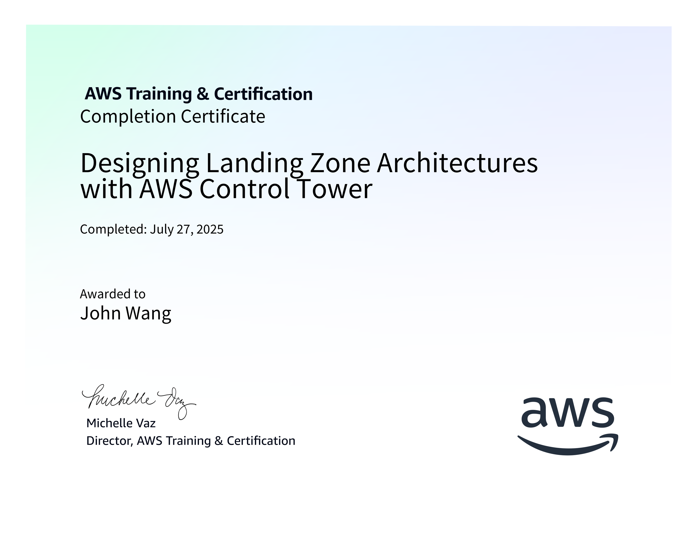
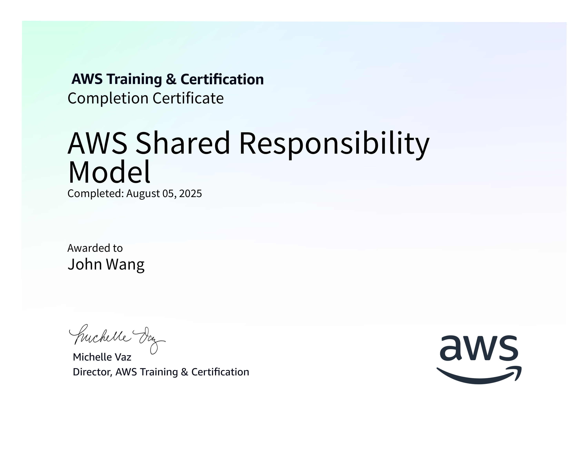

John's Cloud Infrastructure Certificates
- AWS
- Designing Landing Zone Architectures with AWS Control Tower from AWS
- AWS Shared Responsibility Model from AWS
- Create AWS Infrastructure as Code Templates Using Generative AI from Pluralsight by Shubham Sinha
- Introduction to AWS Identity and Access Management (IAM) from Simplilearn
- Introduction to AWS Trusted Advisor from Simplilearn
- Getting Started with AWS Security Hub from Simplilearn
- Introduction to AWS Security Token Services (STS) from Simplilearn
- Getting Started with AWS Control Tower from Simplilearn
- AWS CI/CD Pipeline from Great Learning Academy
- AWS: Identity and Access Management from Whizlabs
- AWS Bedrock
- Amazon Bedrock Getting Started from AWS
- Introduction to Amazon Bedrock: Foundation Models and AI Applications from AWS
- Automate Generative AI workflows using Amazon Bedrock Flows from AWS
- Building Retrieval Augmented Generation (RAG) workflows with Amazon OpenSearch Service from AWS
- AWS SimuLearn: Secure Conversational AI with Guardrails from AWS
- Introduction to Amazon Bedrock from Pluralsight by Muhammad Sajid
- AWS Bedrock AgentCore
- Azure
- Google Cloud Platform (GCP)
AWS (10)
Designing Landing Zone Architectures with AWS Control Tower from AWS

AWS Shared Responsibility Model from AWS

Create AWS Infrastructure as Code Templates Using Generative AI from Pluralsight by Shubham Sinha

Introduction to AWS Identity and Access Management (IAM) from Simplilearn

Introduction to AWS Trusted Advisor from Simplilearn

Getting Started with AWS Security Hub from Simplilearn

Introduction to AWS Security Token Services (STS) from Simplilearn

Getting Started with AWS Control Tower from Simplilearn

AWS CI/CD Pipeline from Great Learning Academy

AWS: Identity and Access Management from Whizlabs

AWS Bedrock (6)
Amazon Bedrock Getting Started from AWS

Introduction to Amazon Bedrock: Foundation Models and AI Applications from AWS

Automate Generative AI workflows using Amazon Bedrock Flows from AWS

Building Retrieval Augmented Generation (RAG) workflows with Amazon OpenSearch Service from AWS

AWS SimuLearn: Secure Conversational AI with Guardrails from AWS

Introduction to Amazon Bedrock from Pluralsight by Muhammad Sajid

AWS Bedrock AgentCore (5)
Amazon Bedrock AgentCore Getting Started from AWS

Amazon Bedrock AgentCore Identity Tutorial from AWS

Amazon Bedrock AgentCore Memory Tutorial from AWS

Amazon Bedrock AgentCore RunTime Tutorial from AWS

Amazon Bedrock AgentCore Tools Tutorial from AWS

Azure (3)
Azure AI Fundamentals from Pluralsight by Daniel Krzyczkowski

Create Azure Resource Manager Templates Using Generative AI from Pluralsight by Bismark Adomako

Microsoft Azure Solutions Architect: Design for High Availability from Pluralsight by Barry Luijbregts

Google Cloud Platform (GCP) (1)
Scaling with Google Cloud Operations from Google Cloud